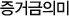

선물옵션 자금관리

A: 선물옵션 거래를 하는데 매번 증거금이 어때서, 주문이 안들어간다. 출금이 안된다 하던데…
B: 맞아… 나는 추가담보가 필요하다고 하는데 돈이 없어서 포지션이 중간에 청산되어 버리더라구…
-
결제이행을 보증하기 위해 매일 주가변동을 반영한 포지션의 위험치에 대하여 증거금 징수
선물옵션거래는 현물과 달리 위험이 무한대로 늘어날 수 있는 구조를 가지고 있는 상품인데 반해 처음 주문시 필요한 자금은 적어 레버리지효과가 크다고 앞에서 배웠습니다. 따라서, 이러한 위험을 Cover할 수 있도록 일일정산을 하고 있고, 결제이행을 보증하기 위하여 증권회사가 고객에게 징수하는 것이 증거금입니다. 즉, 일종의 결제이행보증을 위한 담보라고 할 수 있습니다.
-
위험치에 비해 제공한 담보가 부족할 경우 추가로 증거금 징수
주식의 경우 아무리 주가가 하락하더라도 매수한 시점에서 제공해야하는 담보보다 더 큰 손실이 발생하는 경우는 없습니다. 하지만, 선물옵션은 KOSPI 200 지수가 투자자가 구축해놓은 포지션의 손익구조와 반대로 움직일 경우 처음 포지션 진입할 때에 비해 위험이 증가하게 되고, 이러한 위험을 Cover할 수 있도록 매일매일 계좌가 유지해야 하는 증거금을 재산정하여 담보가 부족할 경우 담보를 더 제공할 것을 요구하여 결제불이행이 발생할 수 있는 가능성을 사전에 방지하는 증거금제도를 운영합니다. 즉, KOSPI 200 지수가 변동하더라도 투자자가 구축한 포트폴리오를 계속 유지하기 위해서는 증거금부족으로 인하여 지속적인 담보제공이 필요할 수 있습니다.
-
추가징수시 자금여력이 없을 경우 강제청산
자신이 보유한 자금을 전부 투자하여 포지션을 구축하게 되면, KOSPI 200 지수가 변동하여 추가담보제공이 필요할 경우 자금여력이 없어 더 이상 포지션을 유지하지 못하고, 강제청산 해야되는 경우가 발생하게 됩니다. 그래서 선물옵션거래를 하는 투자자들은 만기까지 포지션을 보유하여 목적하는 손익을 획득하기 위해 자금관리를 철저히 하여야 하고, 이러한 위험을 Cover하기 위해 징수하는 증거금에 대해 잘 알고 있어야 합니다.
결론 : 목적하는 손익을 획득하기 위해 선물옵션투자시 자금관리 중요
이러한 증거금은 주문과 출금시 사용되는 위탁증거금과 결제이행을 위하여 계좌가 유지해야 하는 담보수준인 유지증거금, 그리고 유지해야 하는 담보수준을 유지하지 못했을 때 추가로 담보제공을 요구하는 추가증거금 이렇게 3가지로 구성됩니다.
각 증거금의 의미와 용도 등에 대하여 아래표에서 간단하게 요약해보고, 각 증거금들이 어떻게 산출되는지 알고 있어야 자금관리를 효율적으로 할 수 있으므로 각 증거금들의 산출방법을 상세하게 다음페이지에서 알아보도록 하죠.
|
위탁증거금 |
유지증거금 |
추가증거금 |
| 의미 |
거래개시할 때 요구하는 증거금수준 |
현재 보유한 포지션을 익일 계속 보유하기 위해 필요한 증거금수준 |
고객이 유지증거금을 담보로 제공 못할 경우 추가로 담보제공을 요청하는 증거금수준 |
| 산출 |
KOSPI200선물옵션 15% 수준 |
KOSPI200선물옵션 10% 수준 |
계좌에 예치한 자금이 유지증거금 수준을 하회할 경우 개시증거금인 위탁증거금수준까지 추가담보제공 |
| 주식선물옵션 18% 수준 |
주식선물옵션 12% 수준 |
| 용도 |
예치한 자금중 위탁증거금
초과자금만 주문,출금가능
|
결제이행보증을 위해 매일매일 재산정함 |